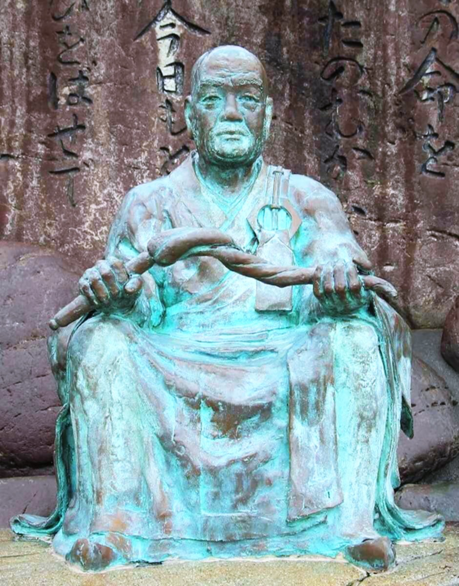

Shimazu Tadayoshi · 1492-1568
薩摩武士の教典、47首の知恵
島津中興の祖・島津忠良公（日新斉）が5年余の歳月をかけて詠んだ47首。薩摩の郷中教育の精神的支柱であり、西郷隆盛が幼少より諳んじた生の哲学である。
日新公いろは歌は、戦国期の薩摩藩主・島津忠良公（号：日新斉）が、いろは47文字の各音を頭文字に据えて詠んだ教訓歌の集成である。修身・処世・統治・覚悟にわたる広範な知恵が、簡潔な和歌の形式に凝縮されている。
これらの歌は「郷中教育」——薩摩藩独自の年長者が年少者を指導する自治的教育制度——の根幹を成し、明治維新を担った人材群の精神形成に深く刻み込まれた。